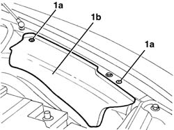
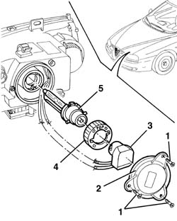
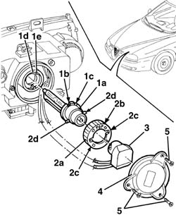

5540B44 dipped beam for one gas discharge lighting unit one lh or rh r r
- Path
- Procedures > 55 ELECTRICAL EQUIPMENT > 5540 EXTERIOR LIGHTING > 5540B headlamps > 5540B44 dipped beam for one gas discharge lighting unit one lh or rh r r
- Kind
- repair procedure (removal / refitting; the operation number is the code)
- Applies to
- all engines; all production periods
- Interactive page
- https://sloeber94.github.io/elrnDB-a156/en/#/3238452
Applies to: engines: 1.9 JTD 16v; all production periods
 Removing
Removing
 Refitting
RefittingApplies to: engines: 1.9 JTD 16v; all production periods
Open the bonnet lid.
1. For the left headlamp only. Undo bolts (1a) and remove protection (1b).

Applies to: engines: 1.9 JTD 16v; all production periods
1. Undo the bolts.
2. Remove the cover.
3. Rotate the bulb holder in an anti-clockwise direction (bayonet fitting) and extract it.
4. Rotate the ring nut in an anti-clockwise direction and extract it.
5. Extract the gas discharge dipped headlamp bulb.

Applies to: all engines; all production periods
Refitting
RemovingCheck the condition and the cleanliness of the lamp.
1. Place the bulb (1a) in the housing, inserting the seats (1b) and (1b) on the teeth (1d) and (1e), respectively.
2. Place the ring nut (2a) in position, with the word TOP (2b) upwards and also ensure that the housings (2c) are aligned with the bulb pins (2d); lastly, rotate the ring nut in the housing.
3. Fit the bulb holder and rotate it into position (bayonet fitting).
4. Place the cover in position.
5. Tighten the bolts.

Applies to: all engines; all production periods
For the left headlamp only. Position the protection and fix it using the bolts.
Check that the front headlamps are working properly.
Applies to: engines: 1.9 JTD 16v; all production periods